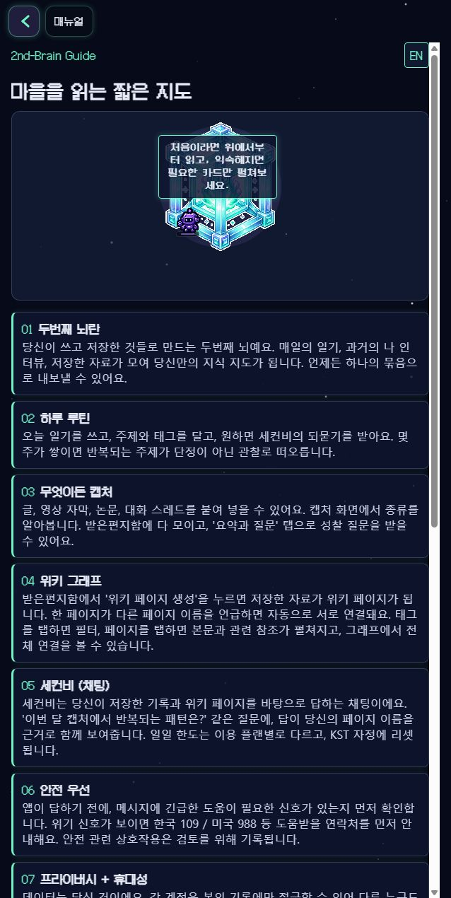
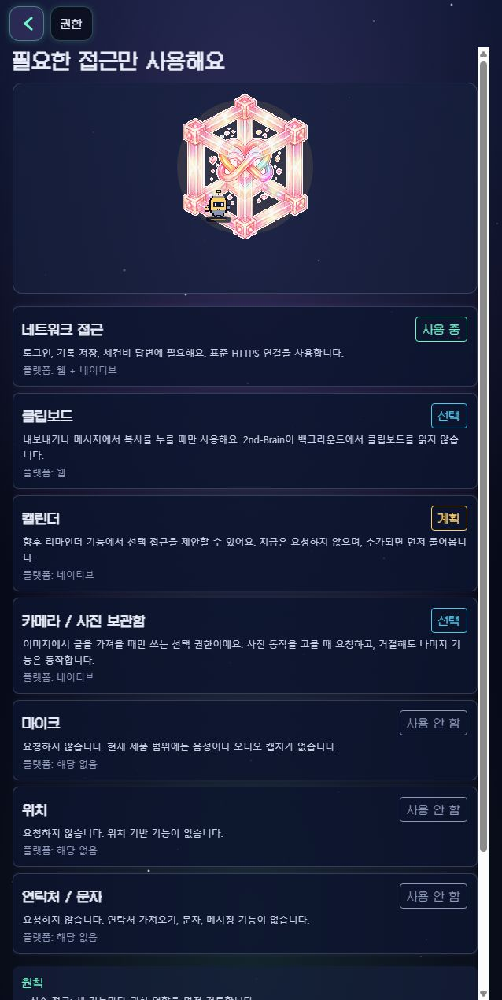

O-12 Phase C Public Live Audit
[2026-06-08 / 16:33:49 KST] Codex live-browser pass on signed-out public surfaces.
Privacy boundary: sign-in screenshots were deleted because Chrome autofilled personal credentials. Authenticated Phase C screens need a clean test profile/session.
Findings
P1 - Manual still says village map
Live /manual and source src/app/manual.tsx:155 still use 마을을 읽는 짧은 지도 / A compact map of the village. This conflicts with the current O-12 first-impression direction toward Soul/Core/tree/Gameboy framing.
P1 - Research action redirects to sign-in
The public manual offers 큐레이션된 자료, but signed-out /research redirects to /sign-in. Source confirms the button at src/app/manual.tsx:277-283 and guard at src/app/research.tsx:77-79.
P2 - Claim tone
검증된 심리학 is defensible, but it may read too clinical/certification-like for unauthenticated trust copy. Consider 연구 기반 자기 이해 if the softer position is preferred.
Evidence

